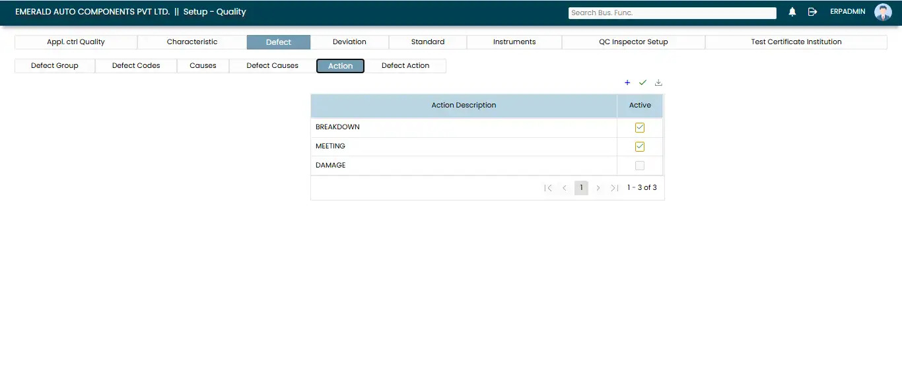

<div data-category="Quality control Management" data-title="Action Description" data-updated="December 01, 2025" data-contributors="RoadmapIT" data-breadcrumb="Home,Quality control Management,Action Description">
  <div class="page-content">
    <p>The Action can be defined in this screen. This screen is used to add, modify, and delete the Action Causes.</p>

    <h5>Navigation Path:</h5>
    <p class="fs-6">Quality Control \ Setup \ Setup – Quality</p>
    
    <!-- Add Action -->
    <h2>Add Action:</h2>
    <ul style="list-style-type: none; align-content: center">
      <li class="mouse-icon">Click the add icon to create.</li>
      <li class="mouse-icon">Enter the Action Description.</li>
      <li class="mouse-icon">
        Click
        <i class="bi bi-check-lg fs-4 mx-1 text-success"></i>
        to save.
      </li>
    </ul>

    <!-- Modify Action -->
    <h2>Modify Action:</h2>
    <ul style="list-style-type: none; align-content: center">
      <li class="mouse-icon">Only descriptions can be modified.</li>
      <li class="mouse-icon">Click on the Action.</li>
      <li class="mouse-icon">Change the Description.</li>
      <li class="mouse-icon">
        Click
        <i class="bi bi-check-lg fs-4 mx-1 text-success"></i>
        to save.
      </li>
    </ul>

    <!-- Disable Action -->
    <h2>Disable Action:</h2>
    <ul style="list-style-type: none; align-content: center">
      <li class="mouse-icon">Only unused profile actions can be disabled.</li>
      <li class="mouse-icon">Select the Action.</li>
      <li class="mouse-icon">Disable the Active flag.</li>
    </ul>
  </div>
</div>